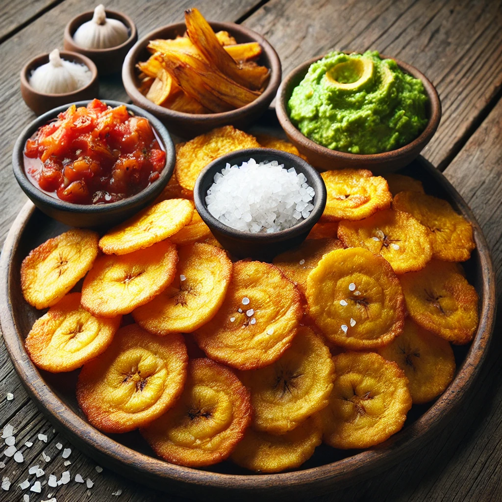

Arroz con coco
Ingredientes:
1 taza de arroz
1 taza de leche de coco
1 taza de agua
2 cucharadas de azúcar
1 pizca de sal
Preparación:
En una olla, mezcla la leche de coco, agua, azúcar y sal. Lleva a ebullición.
Agrega el arroz lavado, reduce el fuego y cocina tapado hasta que el líquido se absorba y el
arroz esté suave (unos 20 minutos).
Revuelve y sirve caliente.

Pandebono
Ingredientes:
1 taza de almidón de yuca
1 taza de queso rallado (campesino o mozzarella)
1 huevo
2 cucharadas de leche
Preparación:
Mezcla todos los ingredientes hasta obtener una masa homogénea.
Forma bolitas pequeñas y colócalas en una bandeja para horno.
Hornea a 180°C durante 15-20 minutos o hasta que estén dorados
Changua
Ingredientes:
2 tazas de leche
1 taza de agua
2 huevos
1 cebolla larga, picada
Cilantro fresco
Sal al gusto
Preparación:
Hierve la leche con el agua y la cebolla.
Casca los huevos directamente en el caldo y cocina por 3-4 minutos.
Sirve caliente y espolvorea con cilantro.

Patacones
Ingredientes:
2 plátanos verdes
Aceite para freír
Sal al gusto
Preparación:
Pela los plátanos y córtalos en rodajas gruesas.
Fríe las rodajas hasta que estén doradas, retíralas y aplánalas con un plato o prensa.
Fríelas nuevamente hasta que estén crujientes. Agrega sal al gusto.